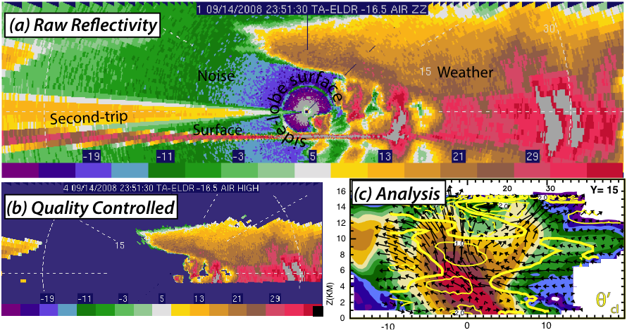

What is LROSE?
- LROSE is an NSF-backed project to develop common software for the LIDAR, RADAR and PROFILER community.
- It is based on collaborative, open source development. The code is freely available on the web and will be organized on our GitHub page.
- The core package is being jointly developed by Colorado State University (CSU) and the Earth Observing Laboratory at the National Center for Atmospheric Research (NCAR/EOL).
- Additional algorithms and analysis tools will developed and supported by the community.
- Data will be stored in portable data formats, based on UNIDATA NetCDF, following the Climate and Forecasting (CF) conventions to facilitate data assimilation by models.
LROSE was first proposed to the National Science Foundation (NSF), in a white paper, in 2011. After revisions, this white paper was released to the user community in September 2012 to obtain feedback and comments.
NSF provided seed funding in 2012 and 2013 to help start LROSE development.
A 4-year SI2-SSI grant from NSF was awarded in 2016 to CSU and NCAR/EOL to further develop LROSE.

What problem are we trying to solve?
- We support users in the scientific community, but we are finding it increasingly difficult to provide good quality support for aging legacy applications.
- The scientific community has needs that are not supported by our current software.
- We have a large code base of software, of varying ages and maintainability.
- We have inherited data formats that are not optimal for scientific data exchange.
LROSE components
LROSE is intended to handle information at all stages, from time series right at the instrument, to moments in radial format, to products in Cartesian coordinates, displays that integrate the data for visualization, to provision of data to models for data assimilation.
The intention is that CSU and NCAR will develop the so-called 'core' functionality, while the community would be encouraged to contribute aspects specific to their needs, that could then be shared by other researchers.
The components fall into the following categories:
- Core data exchange formats (EOL/UNIDATA): files and data streams in standardized formats – mostly NetCDF using the Climate and Forecasting (CF) conventions, suitable for exporting to models for data assimilation.
- Core infrastructure (CSU and NCAR/EOL): applications that provide the ‘glue’ to hold the system together.
- Community algorithms and tools: analysis, research, generating derived products.
- Core displays for data visualization, and editing as appropriate. For example, see ArtView from the Nick Guy at http://nguy.github.io/artview/.
These components are depicted in the following schematic.